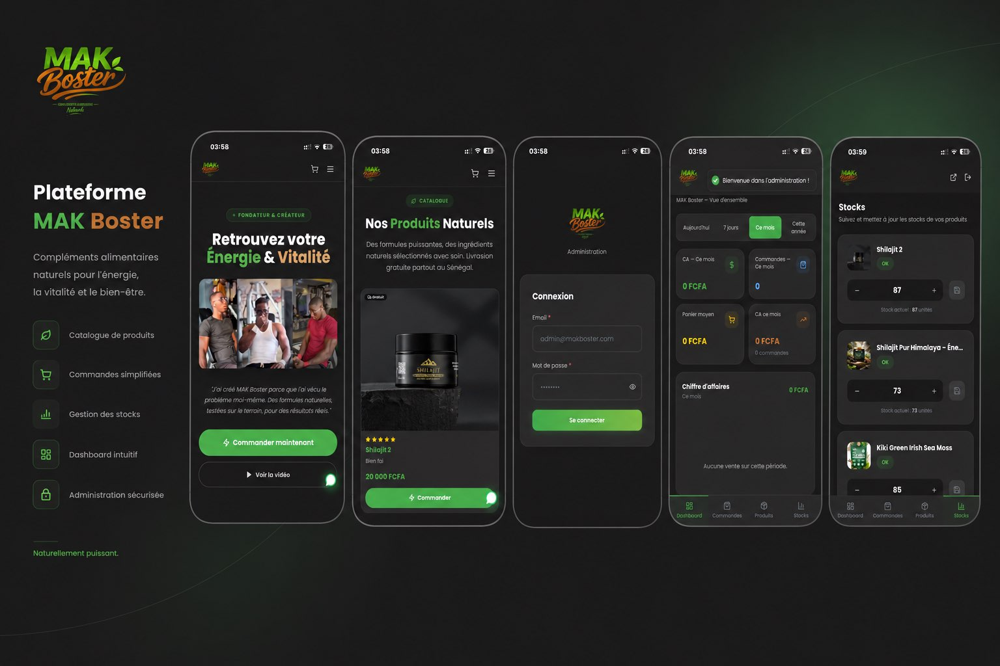

Build+
Product Builder IA & Architecte de Plateformes. J'orchestre l'intelligence artificielle et l'ingénierie logicielle pour construire des écosystèmes performants et scalables.
À propos
L'Intelligence Artificielle n'est plus une promesse, c'est une réalité de production. Mon immersion dans le digital a commencé par l'exploration des outils de drag-and-drop et WordPress pour bâtir des solutions e-commerce et optimiser leur référencement. Mais c'est fin 2022, avec l'éveil des modèles LLM, que ma vision a radicalement muté.
Du "no-code" expérimental (Lovable, Replit, Bolt) aux architectures robustes d'aujourd'hui, j'ai suivi chaque étape de cette révolution technologique. Là où certains restent sceptiques, je vois une ère de supériorité où l'IA, orchestrée avec précision, devient un moteur de croissance sans précédent.
Mon Manifeste
L'IA de production, la fin de l'hésitation.
L'IA a franchi l'étape de la curiosité pour devenir un standard industriel. Ce n'est plus une question d'hallucination, mais de précision. Pour les entreprises comme pour les développeurs, l'adopter n'est plus un choix, c'est une urgence vitale pour rester compétitif.
Résoudre en profondeur, délivrer dans l'instant.
Nous utilisons l'IA en profondeur pour concevoir des systèmes et automatisations qui règlent de vrais problèmes business. Là où les cycles traditionnels prenaient des mois, nous créons des solutions robustes et sécurisées en un temps record. La rapidité est notre nouvelle norme de qualité.
Le Sénégal à l'heure du saut technologique.
L'IA est une opportunité historique pour nous rattraper sur des décennies de retard. C'est le moteur d'une croissance accélérée qui permet de bâtir des systèmes performants. Ma mission est de transformer notre paysage digital et commercial avec cette puissance dès aujourd'hui.
Mes Réalisations
Architecture, Intelligence Artificielle & Performance

Chez Zahra – E-Commerce & Back-Office
Découvrir comment je l'ai fait :
Le défi : Construire et déployer une plateforme e-commerce complète avec un tableau de bord administrateur sur-mesure pour la gestion des produits et de l'inventaire.

Visiter le siteMak Booster – Plateforme E-Commerce
Découvrir comment je l'ai fait :
Le défi : Mettre en place un système de vente et un tableau de bord (dashboard) ultra-performant pour la gestion quotidienne de la plateforme Mak Booster.
Parcours Stratégique
Chaque étape est un projet, pas juste un poste.
CEO & Fondateur
Sen Optima Consulting
Création de mon agence de communication digitale dédiée. J'accompagne les entreprises dans leur stratégie, la conception de plateformes et l'intégration d'outils d'IA.
Fondateur E-Commerce
Gosafe Access
Création d'une marque e-commerce de bout en bout spécialisée dans les accessoires automobiles (lampes LED). Mise en place d'une stratégie d'acquisition générant + 1 million FCFA de chiffre d'affaires par mois.
Responsable Marketing Digital
Icore Groupe (Agence de voyage)
Pilotage de la stratégie digitale de l'agence pour optimiser les processus d'acquisition. Une étape clé pour maîtriser les enjeux commerciaux et la conversion B2C.
Resp. Technique & Freelance Multimédia
KN Tv & Indépendant
Responsable technique de la Web TV KN Tv. En parallèle : photographie, montage vidéo et design graphique en freelance. J'ai exploré toutes les facettes de la création numérique.
Spécialisations Certifiantes
Google Coursera & Force N
Acquisition de compétences avancées en marketing digital, analyse de données et technologies cloud. Une démarche d'apprentissage continu pour maîtriser les outils les plus performants du marché.
Architecture & Expertise
La fondation technique de votre croissance digitale
Stratégie Digitale & Marketing
Conception et structuration de stratégies digitales orientées vers la croissance, l'acquisition client et le développement de marque.
E-commerce & Marketplace
Développement de systèmes de vente en ligne et de marketplaces avec une architecture fonctionnelle adaptée au contexte africain.
Orchestration Multi-IA
Production de contenus professionnels, de storytelling marketing et de directions créatives adaptés aux audiences locales.
Bases de Données & Intégrité
Transformation d'idées en projets structurés, de la modélisation économique à la mise en place d'une organisation opérationnelle.
UI/UX & Expérience Utilisateur
Compréhension approfondie des mécanismes d'expérience utilisateur (mobile-first) et conception d'interfaces modernes et intuitives.
Gestion de Projet & Vision
Transformation d'idées en projets structurés, de la modélisation économique à la mise en place d'une organisation opérationnelle.
L'École du Terrain
"La plupart de mes compétences, je les ai acquises en pratiquant. C'est ma véritable force."
Orchestration d'Agents IA & Co-création
Auto-formation continue (Sécurité, IA) Codeur / AI Builder
En perpétuelle quête de perfectionnement. Je suis actuellement des formations avancées (Sécurité, IA) auprès de grands architectes pour consolider mes solides acquis de Codeur / AI Builder et toujours maîtriser les technologies de demain.
Marketing Numérique & E-Commerce
Formations spécialisées (Google & Force N)
Apprentissage intensif via des programmes reconnus pour structurer mon expertise technique et commerciale, avec une application immédiate sur le terrain.
Community Management & E-Commerce
Formation OpenClassrooms & Pratique intensive
Le point de bascule. Suite à l'arrêt de ma classe de terminale (accident/rééducation en 2020), je découvre le marketing digital. Je me forme assidûment, de la création de contenu au montage vidéo, et je forge mes compétences directement sur le terrain.
Prêt à bâtir
votre vision ?
Remplissez ce formulaire pour m'envoyer directement les détails de votre projet via WhatsApp.